A dermatite herpetiforme (DH) ou doença de Duhring-Brocq é uma erupção papulovesicular crônica, de caráter polimorfo, intensamente pruriginosa, que usualmente está distribuída simetricamente nas superfícies extensoras, sendo recorrente, rara e associada na maioria dos casos clínica ou subclinicamente com enteropatia sensível ao glúten ou doença celíaca (DC). A DH é uma manifestação cutânea da DC.
Epidemiologia e etiopatogenia
Sua prevalência é de 10 por 100.000, sendo doença de todas as idades embora predomine entre os 20 e os 55 anos. Atinge mais o sexo masculino que o feminino (2:1) dentre os adultos, sendo menos freqüente entre os negros e asiáticos. Há uma história familiar de DH ou doença celíaca em 10,5% dos pacientes.
Sua causa é desconhecida. Enteropatia sensível ao glúten (duodeno e jejuno) está presente em todos e demonstrável na maioria dos pacientes (90-100%), em geral, assintomática. Apenas 20% dos pacientes com DH tem sintomas intestinais da doença celíaca. O glúten é uma proteína presente no trigo, centeio e cevada, mas não na aveia. A gliadina parece ser seu componente antigênico. Verifica-se que 90% dos pacientes com DH e DC apresentam o HLA-DQ2 compostos pelos alelos DQA1*0501 e DQB1*02.
Caracteristicamente, observa-se deposição granular de IgA, glúten-dependente, quase exclusivamente do tipo IgA1, na papila dérmica, embora IgM, IgG e C3 possam ser encontrados. As presenças da properdina e do fator B sugerem a ativação do complemento sendo feita pela via alternativa. Tem-se observado também depósito de IgA ao nível da membrana basal da mucosa jejunal. Os depósitos de IgA e C3 não são afetados pelo tratamento com drogas, porém diminuem de intensidade ou desaparecem com dieta livre de glúten.
Uma variedade de autoanticorpos tem sido detectada em pequeno número de pacientes com dermatite herpetiforme, notavelmente, anticorpos antitireoide, antireticulina, antiglúten, antigliadina e antiendomisial. O endomísio é o tecido conectivo que cobre os músculos lisos do esôfago, estômago e intestino delgado. Anticorpos IgA antiendomisial (IgA-EmA) foram positivos em 80% dos pacientes com DH e em 95% daqueles com DC. Estes anticorpos (IgA-EmA) desaparecem depois de um ano de dieta sem glúten com a volta do crescimento das vilosidades do jejuno. Há grande associação entre a DH e algumas doenças autoimunes, particularmente a tiroidite de Hashimoto.
A DH é a única bulose autoimune subepidérmica onde, até o momento, não foram detectados autoanticorpos contra os componentes do complexo de adesão da zona da membrana basal. Recentemente, foi proposto que a transglutaminase epidérmica é o autoantígeno da DH. Já a transglutaminase tissular é o autoantígeno endomisial.
Manifestações clínicas
Na maioria dos pacientes, as lesões são precedidas algumas horas antes por sensação de queimor ou prurido localizados e os pacientes podem freqüentemente identificar o sítio de uma nova lesão pelos sintomas prodrômicos. As lesões primárias são pleomórficas: pápulo-eritematosas, placas de aspecto urticariforme, vesículas e bolhas tensas, simétricas, com tendência a agrupar-se tomando o aspecto herpetiforme. O aparecimento e desaparecimento contínuo destas lesões pode ocasionar hiperpigmentação ou hipopigmentação. Tem predileção pelas superfícies extensoras dos antebraços, joelhos e cotovelos, além de couro cabeludo, nuca, pregas axilares, ombros, nádegas e região sacra. O acometimento mucoso é raro e revela mau prognóstico. Anomalias gastrointestinais, ocasionadas por sensibilidade ao glúten podem ser observadas. Portanto, é possível encontrar na dermatite herpetiforme esteatorreia (30%), absorção anormal de D-xilose (10-33%), anemia secundária a deficiência de ferro e folato, acloridria e gastrite atrófica. O diagnóstico diferencial envolve a escabiose, a urticária papulosa, o prurigo crônico, o eritema multiforme e o penfigoide bolhoso. Se apenas crostas hemorrágicas estão presentes o diagnóstico deve ser suspeitado com base na distribuição das lesões.
O tratamento não altera o curso da doença. Muitos pacientes tem sintomas por anos mas, aproximadamente, um terço entra em remissão permanente.
Diagnóstico
Histopatologia. A biópsia deve ser efetuada em lesão cutânea recente, clinicamente não vesiculosa. Histologicamente, podemos observar inicialmente uma coleção de neutrófilos na papila dérmica que constituem os microabscessos de Pierard, posteriormente podem surgir eosinófilos. Nas lesões mais antigas verifica-se a formação de bolhas inicialmente multiloculares, subepidérmicas, que podem ser impossíveis de diferenciar do penfigoide bolhoso.
Imunomicroscopia eletrônica. Os depósitos granulares de IgA aparecem como grumos densos e fibrilas filiformes por baixo da membrana basal, na área das fibrilas de ancoragem e em algumas ocasiões, nas microfibrilas das fibras elásticas.
Imunofluorescência. A biópsia de pele para a imunofluorescência deve ser obtida da pele normal adjacente ou pele eritematosa, porque os depósitos de imunoglobulinas são usualmente destruídos durante o processo de formação da bolha. A imunofluorescência direta é sempre positiva e mostra depósitos de imunoglobulinas principalmente IgA de forma granular, fibrilar ou pontilhada nas papilas dérmicas e ao longo da zona de membrana basal. Os depósitos de IgA não são afetados pelo tratamento com drogas mas podem diminuir ou mesmo desaparecer após longo tempo de uma dieta livre de glúten. O sítio de formação das bolhas na DH é dentro da lâmina lúcida. A imunofluorescência indireta é negativa.
Tratamento
Dieta sem glúten. A dieta deve ser seguida por meses, freqüentemente dois anos, antes da medicação poder ser descontinuada. Algumas evidências mostram que a dieta deva ser seguida indefinidamente, pois a reintrodução do glúten em alguns pacientes produz relapso das lesões cutâneas e a dieta livre em glúten, após cinco a dez anos, protege os pacientes do linfoma. O trigo deve ser evitado, mas a aveia não é lesiva. Os pacientes podem ter suporte no site http://www.gluten.net.
Dieta elementar. Fatores dietéticos outros, fora o glúten, podem ser importantes na patogênese da dermatite herpetiforme. Muitos antígenos que produzem uma resposta imune humoral são proteínas completas. Uma significante melhora clínica cutânea e morfológica intestinal tem sido observada com uma dieta elementar, independente da administração do glúten, na qual as proteínas são substituídas por aminoácidos livres. A proteína fornecida por uma dieta elementar é composta de aminoácidos livres 100% não alergênicos.
A doença piora com a ingestão ou uso tópico de iodo inorgânico que estimula a infiltração neutrofílica.
Dapsona ou sulfapiridina. Estas drogas controlam mas não curam a doença. A dapsona é mais efetiva que a sulfapiridina. A resposta das lesões cutâneas é dramática, o que não ocorre com as lesões intestinais. A dose inicial da dapsona na maioria dos casos é de 25 a 50mg/dia em adultos e 0,5mg/Kg em crianças. O início da terapia com altas doses de sulfona pode precipitar hemólise severa e descompensação cardíaca em indivíduos susceptíveis. Alguns pacientes podem requere 400mg/dia. Com a melhora, esta dose pode ser reduzida para 50 a 100mg/dia, podendo ser mantida por muitos anos. Ficar atento para os efeitos indesejáveis da dapsona tais como: anemia hemolítica, metahemoglobinemia, síndrome sulfônica (linfadenopatia e hepatite) e agranulocitose fatal. Pacientes com deficiência de 6-GPD (glicose-6-fosfato desidrogenase) devem ser identificados antes do tratamento pelo maior risco de hemólise. A hemólise parece ser evitada pelo uso concomitante de 800U de vitamina E ao dia. A metahemoglobinemia normalmente não ultrapassa 5%, mas os pacientes devem mantê-la entre 10 e 15%. Metahemoglobinemia na ausência de sintomas cardiopulmonares não requer alteração na dose da dapsona. A sulfapiridina na dose de 1,5-2g/dia é particularmente útil em pacientes com intolerância a dapsona. A ciclosporina ou a colchicina podem ser usadas em pacientes resistentes ou alérgicos a dapsona.
Tetraciclina e nicotinamida. Tem sido reportado bons resultados com tetraciclina 500-1500mg/dia ou minociclina 200mg/dia associada a nicotinamida 1,5g/dia, porém observa-se recidiva das lesões quando suspende-se a medicação.
Corticosteroides sistêmico. São inefetivos, porém corticóides tópicos podem ajudar a reduzir os sintomas.
REFERÊNCIAS BIBLIOGRÁFICAS
1. Primate liver tissue substrate in indirect immunofluorescence diagnostics for patients with dermatitis herpetiformis and celiac disease. Franziska Schauer, Georgia Tasiopoulou, Daniel Schuster, Max Behrens, Sabine Müller, Dimitra Kiritsi. Front Immunol. 2023; 14: 1104360.
2. Consensus on the treatment of autoimmune bullous dermatoses: dermatitis herpetiformis and linear IgA bullous dermatosis - Brazilian Society of Dermatology. Everton Carlos Siviero do Vale, Oscar Cardoso Dimatos, Adriana Maria Porro, Claudia Giuli Santi. An Bras Dermatol. 2019 Mar-Apr; 94(2 Suppl 1): 48–55.
3. Incidence of Dermatitis Herpetiformis in Sweden 2005 to 2018: A Nationwide Retrospective Cohort Study
Zeyad ALBADRI, Doua AL BAYATI, Henrike HÄBEL, Sandra JERKOVIC GULIN, Carina GRÖNHAGEN, Oliver SEIFERT. Acta Derm Venereol. 2023; 103: 13210.
4. Dermatitis Herpetiformis: An Update on Diagnosis and Management. Timo Reunala, Kaisa Hervonen, Teea Salmi. Am J Clin Dermatol. 2021; 22(3): 329–338.
5. Current Concepts of Dermatitis Herpetiformis. Teea SALMI, Kaisa HERVONEN. Acta Derm Venereol. 2020; 100(5): 5664.
Atlas de imagens 87

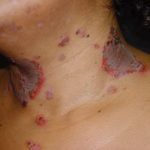


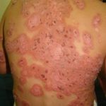

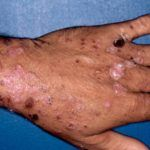

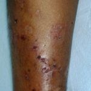

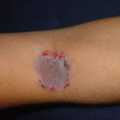

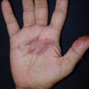

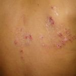

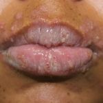

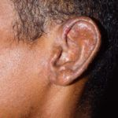

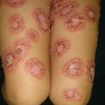

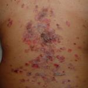

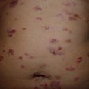

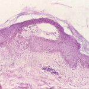

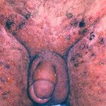

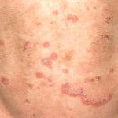

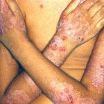

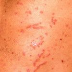

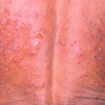

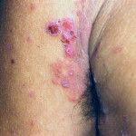

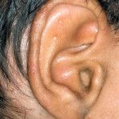

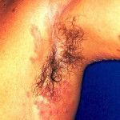


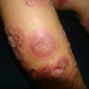

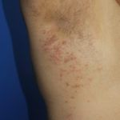

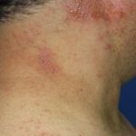

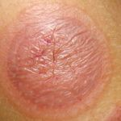

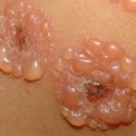

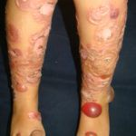

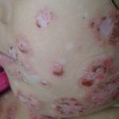

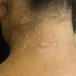

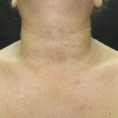

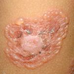

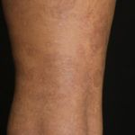

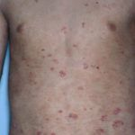

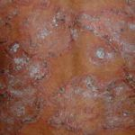

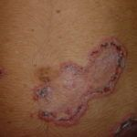

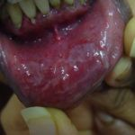

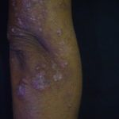

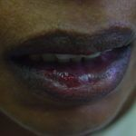

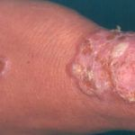

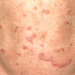

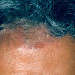

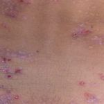


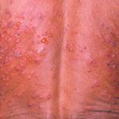

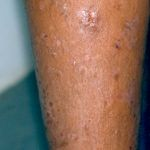

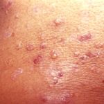

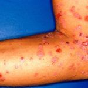

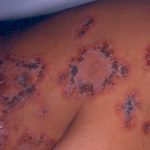

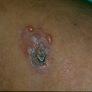

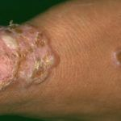

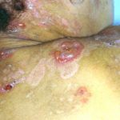


Na Skin Prime
Como podemos ajudar
Entre os recursos citados para Dermatite Herpetiforme, estes estão disponíveis na clínica:
Tratamentos
Diagnóstico